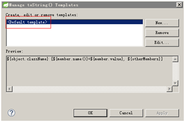

6.2、在你的IDE中为toString方法新增一个模板
打开实体类，按住 alt+shift+s，如果快捷键与其他软件冲突时，在类上点右键，选择"Source -> Generate toString"
在弹出窗口中将Code style修改为StringBuilder/StringBuffer
在弹出窗口中点“Edit”按钮
在弹出的窗口中点击New按钮

将name设置为json，或者你自己想起什么名字都可以
将Pattern修改为 :
这样修改后，对实体类再生成toString方法，选择Json模板时，运行结果就是标准的json格式，这对于日志打印等场景是非常好的